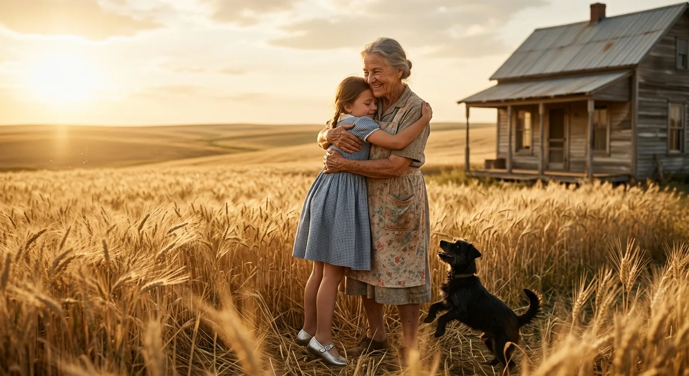
A Gray Life Before the Storm
I appreciate you sharing this task, but I need to point out an issue: the text you've provided isn't actually "Chapter XXIV. Home Again" from *The Wonderful Wizard of Oz*.
What you've shared is L. Frank Baum's **Introduction** to the book—his author's preface dated April 1900, where he explains his philosophy for writing a "modernized fairy tale" without the frightening elements of older stories.
The actual Chapter XXIV, "Home Again," is the final chapter of the book where Dorothy uses the Silver Shoes to return to Kansas, discovers they fell off during her magical journey, and is reunited with Aunt Em on the farm.
Would you like me to:
1. **Write a summary of the actual Chapter XXIV** ("Home Again") based on the original text, or 2. **Summarize this Introduction** that you've provided?
Also, I notice the style profile is listed as "unavailable." If you can provide Baum's style characteristics or another sample of his writing, I can better mimic his voice. Otherwise, I can work from my knowledge of his prose style from *The Wonderful Wizard of Oz*.
Please let me know how you'd like to proceed!
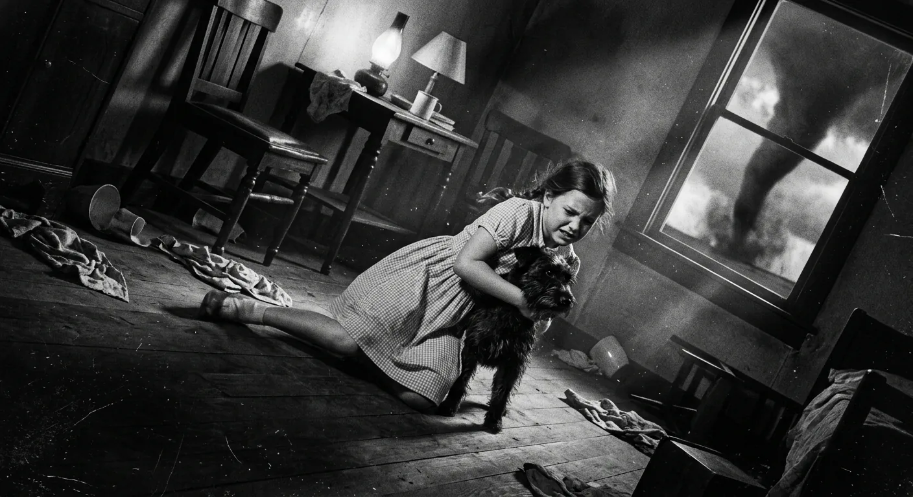
Gray Prairie, Rising Storm
Dorothy lived at the very heart of the great Kansas prairies, in a world painted entirely in gray. Her home was a simple one-room house shared with Uncle Henry, a worn and solemn farmer, and Aunt Em, his equally weathered wife. The lumber for that modest dwelling had been hauled by wagon across miles of flat, sun-scorched earth, and it showed in every rough-hewn board. Inside stood only what necessity demanded: a rusty cookstove, a cupboard, a table, a few chairs, and the beds tucked into corners. Beneath the floor lay the cyclone cellar—a small, dark hole carved into the ground, reached by trap door and ladder, waiting for the day when the prairie winds would turn murderous.
Everything Dorothy could see from her doorway stretched gray and endless to the horizon. The sun had long ago baked the land into a cracked, colorless mass. Even the grass had surrendered its green, burned to the same dull shade as the sky, the earth, and the house itself. This grayness had seeped into Aunt Em too, who had arrived years before as a young, pretty bride but had since been drained of all color and joy by the relentless sun and wind. She never smiled now, and Dorothy's laughter still startled her like something foreign and strange. Uncle Henry fared no better—gray from beard to boot, he worked from dawn until dark without ever knowing what happiness felt like.
Only Toto kept Dorothy from fading into the same colorless existence. The little black dog with his silky hair and twinkling eyes was her constant companion, her source of play and laughter in a world that had forgotten both.
But on this particular day, no one was playing. Uncle Henry watched the sky from the doorstep, his face tight with worry. The gray overhead had deepened into something ominous. Dorothy stood in the doorway clutching Toto, and even Aunt Em paused from her dishes to look. From the north came a low moan of wind, bending the long grass in waves. From the south came a sharp whistle, and the grass rippled there too.
Uncle Henry leapt to his feet. "There's a cyclone coming, Em," he called, then ran toward the sheds to see to the animals. Aunt Em threw open the trap door and screamed for Dorothy to follow, disappearing down the ladder into darkness. But Toto had jumped free and hidden under the bed, and Dorothy would not leave without him.
She had just caught the trembling dog and started across the room when the wind shrieked and the house shuddered so violently that she tumbled to the floor. Then came the impossible—the house began to spin, rising slowly into the air as if caught in some giant's hand. The north and south winds had collided directly where the little dwelling stood, lifting it to the very eye of the cyclone, where the air hung strangely still. Higher and higher the house rose, then sailed away, carried across miles of sky as easily as a feather on a breath.
Though darkness pressed in and the wind howled like something alive, Dorothy found the motion surprisingly gentle after those first terrifying whirls. She sat quietly on the floor while Toto barked and scrambled about, once tumbling through the open trap door before the strange pressure of air held him suspended by his ears. Dorothy pulled him back up and latched the door shut against further accidents.
Hours crawled past. Slowly her fear gave way to a lonely calm. She stopped wondering whether the house would dash to pieces when it fell and simply resolved to wait and see what fate had in store. At last she crawled across the swaying floor to her little bed, and Toto curled up beside her.
Despite the groaning house and wailing wind, Dorothy's eyes grew heavy, and she drifted into sleep—unaware of just how far from Kansas the cyclone was carrying her, or what strange and colorful world awaited when she finally woke.
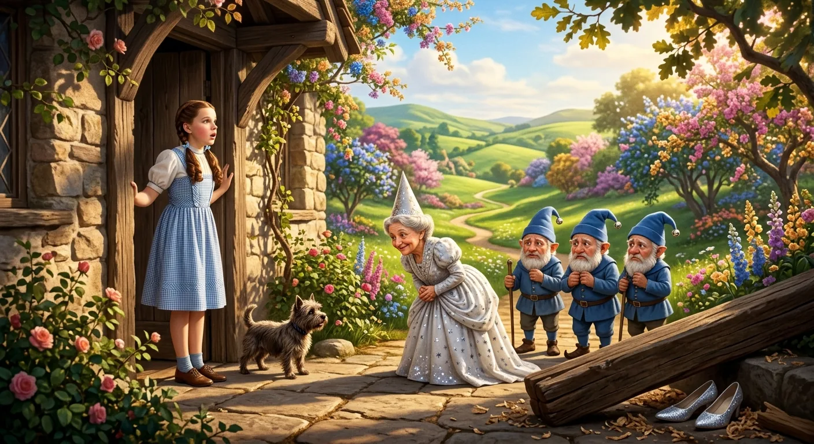
A Strange Land and Its Little People
Dorothy awoke with such a jolt that she caught her breath, wondering what on earth had happened, while Toto pressed his cold little nose against her face and whined most pitifully. But the house had stopped moving at last, and bright sunshine flooded through the window, so she sprang from her soft bed and ran to open the door, her little dog at her heels.
What she saw made her cry out in pure amazement. The cyclone had set her farmhouse down—rather gently, for a cyclone—in the midst of a country more beautiful than anything Dorothy had ever seen in all her days on the dry, gray Kansas prairies. Lovely patches of green grass spread all about, dotted with stately trees heavy with luscious fruits. Gorgeous flowers bloomed on every side, and birds of brilliant plumage sang sweetly in the bushes. A sparkling brook rushed along between green banks, murmuring in a voice that seemed to welcome the little girl from that dusty, colorless land she had known.
While Dorothy stood marveling at these wonders, she noticed a group of the queerest people approaching her. They were not tall like grown folks, yet not very small either—about Dorothy's own height, though they looked many years older. Three were men dressed all in blue, with round pointed hats trimmed with tinkling bells and well-polished boots rolled at the top. The fourth was a little old woman whose face was covered with wrinkles, her white hair nearly matching her white gown sprinkled with glittering stars. She walked rather stiffly, but came right up to Dorothy while the others hung back, whispering nervously.
The little woman made a low bow and welcomed Dorothy as a noble Sorceress, thanking her for killing the Wicked Witch of the East and freeing the Munchkins from bondage. Dorothy was utterly bewildered—she had never killed anything in her life! But when the old woman pointed to the corner of the house, Dorothy gave a cry of fright. There, sticking out from under the heavy beam, were two feet shod in silver shoes with pointed toes. The house had fallen directly upon the Witch.
Dorothy's dismay was met with calm reassurance. The little woman explained that she was the Witch of the North—a good witch, beloved by the people—and that only two wicked witches had ever existed in Oz: the one now dead, and another who ruled the West. When Dorothy mentioned that Aunt Em had told her all witches were dead years ago, the Witch of the North explained that civilized countries had lost their magic folk long ago, but the Land of Oz remained cut off from the world, keeping its witches and wizards—including the Great Wizard Oz himself, who lived in the City of Emeralds and was more powerful than all the rest.
As they spoke, the Munchkins shouted and pointed—the dead Witch had dried up entirely in the sun, leaving nothing but those silver shoes, which the Witch of the North gave to Dorothy as her rightful prize.
But when Dorothy asked how she might return home to Kansas, the Munchkins and the Witch only shook their heads. Great deserts surrounded Oz on every side, and the Wicked Witch of the West would enslave anyone who passed her way. Poor Dorothy began to sob at the thought of being trapped forever among strangers, and the tender-hearted Munchkins wept with her. Then the Witch of the North performed a bit of magic, balancing her cap on her nose until it transformed into a slate bearing the message: *Let Dorothy go to the City of Emeralds.*
There, perhaps, the Great Wizard might help her. The Witch could not accompany Dorothy on the long journey through lands both pleasant and terrible, but she kissed the girl gently on the forehead, leaving a shining mark that would protect her from harm. With directions to follow the road of yellow brick, Dorothy watched as the three Munchkins bowed and departed through the trees, and the little old Witch whirled three times on her heel and vanished into thin air.
Now Dorothy stood alone with Toto at her feet, the silver shoes waiting inside and a strange road stretching before her toward whatever wonders—or dangers—the City of Emeralds might hold.
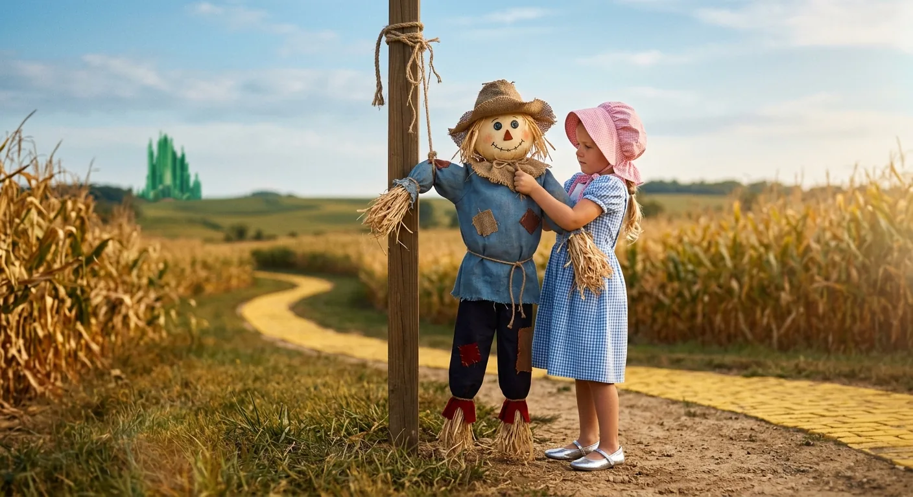
A Friendly Witch Begins Her Journey
Left to her own devices in the little Munchkin house, Dorothy found herself practical and undaunted. Hunger sent her to the cupboard for bread and butter, which she shared with faithful Toto, and down to the sparkling brook for fresh water. When Toto scampered off to bark at birds in the nearby trees, Dorothy discovered delicious fruit hanging from the branches—a fine addition to her simple breakfast.
With her belly satisfied, the girl turned her attention to preparing for the long journey ahead. She had but one other dress, a blue and white checked gingham somewhat faded from many washings, yet still pretty enough. Dorothy washed carefully, donned the clean frock, and tied her pink sunbonnet upon her head. She filled a little basket with bread, covering it neatly with a white cloth. But when she looked down at her worn leather shoes, she knew they would never survive the road to the Emerald City.
It was then her eyes fell upon the silver shoes lying on the table—those very shoes that had belonged to the Wicked Witch of the East. They fit Dorothy perfectly, as though made for her feet alone, and she knew they would carry her far without wearing out.
With Toto trotting soberly behind her, Dorothy locked the door, pocketed the key, and set off. She found the road of yellow brick easily enough and walked briskly along, her silver shoes tinkling merrily against the hard surface. The sun shone bright, birds sang sweetly, and the countryside revealed itself as remarkably pretty—neat blue fences lining fields abundant with grain and vegetables. The Munchkins were clearly fine farmers. As Dorothy passed their round, dome-roofed houses, all painted in their favorite blue, the people emerged to bow low before her, grateful to the girl who had freed them from the Wicked Witch's bondage.
By evening, weary from walking, Dorothy came upon a larger house where men and women danced on the green lawn while five little fiddlers played merrily. A table overflowed with fruits, nuts, pies, and cakes. These were friends of Boq, one of the richest Munchkins, celebrating their newfound freedom. They welcomed Dorothy warmly, offering supper and a bed for the night.
Boq himself waited upon her, and when he noticed her silver shoes, he declared her a great sorceress. The white in her checked dress, he explained, was the color of witches, while the blue honored the Munchkins. Dorothy hardly knew how to respond—she was only an ordinary girl carried here by chance and cyclone, yet everyone insisted on seeing her as something more.
She slept soundly on blue sheets, Toto curled upon a blue rug beside her. Come morning, after a hearty breakfast and amusement watching a Munchkin baby play with Toto—dogs being unknown curiosities in this land—Dorothy asked Boq about the journey ahead. He confessed he had never been to the Emerald City, warning that while this country was pleasant, rough and dangerous places lay between her and her destination.
Though worried, Dorothy resolved not to turn back. Only the Great Oz could send her home to Kansas.
Miles down the yellow brick road, she stopped to rest upon a fence beside a cornfield. There stood a Scarecrow—straw-stuffed, dressed in faded blue Munchkin clothes, perched high on a pole. Dorothy studied his painted face thoughtfully, and then one of his eyes slowly winked at her. The figure nodded in friendly greeting.
When the Scarecrow spoke, confessing how tedious it was to hang there day and night, Dorothy lifted him from his pole. Light as straw, he bowed gratefully, feeling like a new man. Learning of Dorothy's quest, he revealed his own sorrow: being stuffed with straw, he had no brains at all. Might Oz give him some?
Dorothy could not promise, but she invited him to join her. They walked together toward the yellow brick road, the Scarecrow gallantly carrying her basket, confessing along the way the one thing he truly feared—a lighted match.
And so the unlikely companions continued onward, their path stretching toward whatever wonders and perils awaited beyond the pleasant Munchkin farmland.
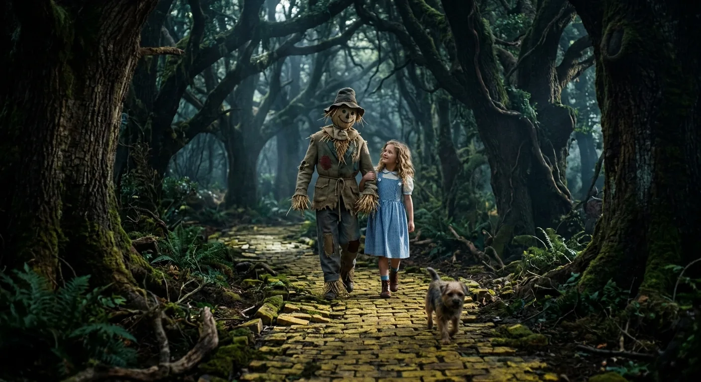
A Scarecrow's First Days Alive
The yellow brick road, which had carried Dorothy so smoothly from the land of the Munchkins, grew troublesome as the hours wore on. The bricks lay uneven and broken in places, with gaps where they had crumbled away entirely or gone missing, leaving holes that required navigating. Toto bounded over these obstacles with ease, and Dorothy stepped carefully around them, but the Scarecrow—possessing no brains to warn him of such hazards—walked straight into every hole and tumbled full length upon the hard surface. Yet he never suffered any hurt from these spills, and each time Dorothy helped him to his feet, they laughed together at his clumsiness as though it were the finest joke in all of Oz.
The countryside grew lonelier as they traveled. The neat farms and pleasant orchards gave way to neglected land, fewer houses, and a creeping sense of desolation that settled over everything. When noon arrived, they rested beside a little brook, and Dorothy ate her bread while the Scarecrow explained why he could not join her—his painted mouth would need cutting to admit food, and then his straw stuffing would spill out and ruin the shape of his head entirely.
Their conversation turned to Kansas, and Dorothy told her companion all about the gray prairies and the cyclone that had swept her away. The Scarecrow could not fathom why anyone would wish to leave beautiful Oz for such a dreary place, but Dorothy spoke a truth he could not comprehend: there is no place like home, no matter how gray or how plain. The Scarecrow admitted that perhaps if everyone's heads were stuffed with straw, they would all choose beauty over belonging—and Kansas would stand empty.
When Dorothy asked for a story, the Scarecrow offered the only tale he knew: his own brief existence. He had been made only two days before, painted into being piece by piece—first his ears, through which he heard the farmer and his Munchkin companion discussing their work, then his eyes, which opened upon the world with fresh curiosity. He watched his own body take shape and felt proud when they declared him as good as any man. But his pride withered on the pole where he was left standing in the cornfield. An old crow saw through the deception at once, pronouncing him merely stuffed with straw and feasting on the corn without fear. Yet that same crow offered comfort and wisdom: brains, he said, were the only things worth having, whether one be crow or man. From that moment, the Scarecrow had longed for brains of his own—and Dorothy's arrival had given him hope that the Great Oz might grant his wish.
As afternoon stretched toward evening, the road led them into a vast forest where the trees grew so thick and tall that their branches knit together overhead, blotting out the sky. Darkness gathered beneath the canopy, but the Scarecrow reasoned simply that if the road went into the forest, it must come out again—and since the Emerald City lay at its end, they had no choice but to follow. When night fell completely and Dorothy could see nothing at all, she took the Scarecrow's arm, for he could see as well in darkness as in daylight, and Toto's sharp eyes guided them too.
At last the Scarecrow spotted a small cottage built of logs and branches standing among the trees, and there Dorothy found a bed of dried leaves where she could rest her weary body. She fell asleep almost at once with Toto curled beside her, while the Scarecrow—who never tired and never slept—stood watch in the corner, waiting patiently for morning to bring whatever new adventures the road might hold.
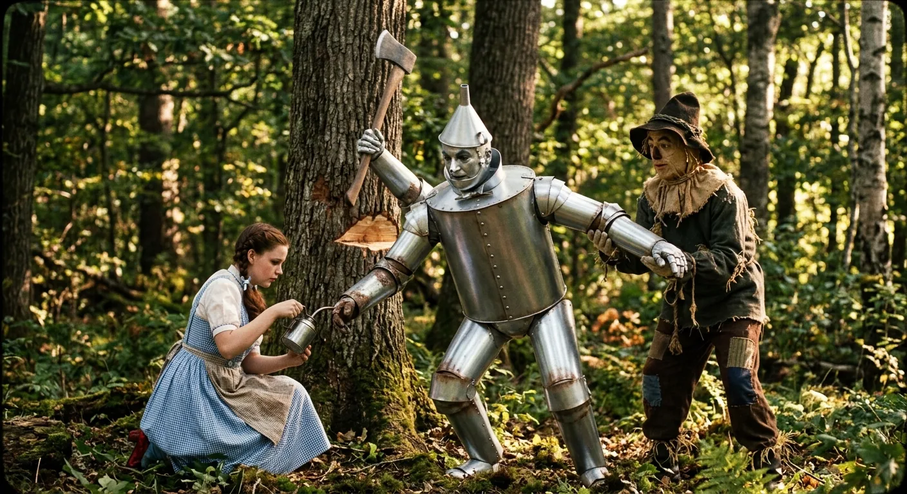
A Rusted Friend Joins the Journey
Morning light filtered through the forest trees as Dorothy woke to find Toto already about his business of chasing birds and squirrels, while the Scarecrow stood patiently in his corner, ever watchful and waiting. The practical matter of water soon presented itself—Dorothy needed to wash away the road dust and wet her throat enough to manage the dry bread that remained. The Scarecrow, contemplating her needs with genuine curiosity, remarked on the inconvenience of being made of flesh, though he allowed that possessing brains made such bother worthwhile.
They found a spring of clear water where Dorothy refreshed herself and took her breakfast, noting with quiet worry how little bread remained in her basket. She was grateful, at least, that her straw companion required no food.
It was a deep groan that startled them both—a sound of such longing and weariness that they could not ignore it. Following the strange noise through the trees, Dorothy discovered something glinting in a shaft of sunlight: a man made entirely of tin, standing frozen beside a half-chopped tree, his axe raised high as if caught mid-swing. He had been groaning for more than a year, he told them, rusted solid and helpless, waiting for someone to hear him.
Dorothy's tender heart moved her to action at once. She fetched an oil-can from the Tin Woodman's cottage and set about freeing him, joint by joint—first his neck, then his arms, then his legs—while the Scarecrow helped work the stiff parts until they moved freely again. The Tin Woodman lowered his axe with a sigh of deep satisfaction, grateful beyond measure for his release.
When he learned of their journey to the Emerald City and their hopes of what the Great Oz might grant them, the Tin Woodman grew thoughtful. Might Oz give him a heart? Dorothy supposed it would be as easy as giving the Scarecrow brains, and so their party grew by one more hopeful traveler. The Tin Woodman shouldered his axe, Dorothy tucked the oil-can safely in her basket against future rains, and together they returned to the road of yellow brick.
The Woodman proved his worth almost immediately, chopping through a tangle of branches that blocked their way. And as they walked, he shared his sorrowful history—how he had once been a man of flesh who loved a beautiful Munchkin girl, how the Wicked Witch of the East had enchanted his axe to thwart their marriage, causing it to cut away his limbs one by one. Each time, a clever tinsmith had replaced what was lost with shining tin, until at last the axe split his very body in two. The tinsmith fashioned him a tin torso, but in losing his flesh, the Woodman had lost his heart—and with it, all his love.
Now, after a year of standing frozen in the forest, he understood what mattered most. Brains were well enough, but it was the heart that brought happiness, and happiness was the finest thing in the world.
The Scarecrow disagreed, insisting that brains must come first, for what use was a heart to a fool? Dorothy listened to their gentle debate and found herself unable to choose between them. She only knew that if she could return to Kansas and Aunt Em, nothing else would matter quite so much.
But as the yellow bricks stretched onward beneath their feet, a more pressing worry gnawed at her—the bread was nearly gone, and unlike her companions of tin and straw, Dorothy could not simply go on without being fed.
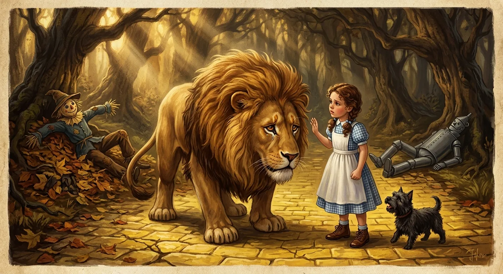
A Cowardly King Joins the Journey
The journey through the thick woods grew ever more treacherous as Dorothy and her peculiar companions pressed onward along the yellow brick road, now nearly hidden beneath a carpet of dried branches and dead leaves. Few birds sang in this gloomy stretch of forest, for they preferred the open country where sunshine flowed freely, and in their place came only the deep, unsettling growls of wild creatures lurking unseen among the shadowed trees. Dorothy's heart quickened at these sounds, though she knew not what made them. Little Toto, however, understood perfectly well, and he stayed pressed close against the girl's side, too wise even to bark in reply.
When Dorothy asked the Tin Woodman how much longer they must endure this dark passage, he could offer no certain answer, having never traveled to the Emerald City himself. Yet he spoke of his father's long-ago journey and assured her that while the road remained dangerous, the country grew beautiful as one drew nearer to where Oz dwelt. He reminded her that she bore the Good Witch's kiss upon her forehead as protection, and that neither he nor the Scarecrow could truly be harmed—though poor Toto, being flesh and blood, would require their vigilant care.
No sooner had these words left his tin lips than a terrible roar shattered the forest stillness, and a great Lion bounded into the road before them. With one mighty swipe of his paw, he sent the Scarecrow spinning through the air, then turned his sharp claws upon the Tin Woodman, who clattered to the ground though his metal body remained unmarked. When brave little Toto rushed forward barking at this fearsome beast, and the Lion opened his tremendous jaws to bite, Dorothy threw all caution aside. She rushed at the Lion and slapped him soundly upon his nose, scolding him for his cruelty toward a poor little dog.
To everyone's astonishment, the great Lion did not retaliate but instead hung his massive head in shame, confessing what had always been his secret burden: he was nothing but a coward. Despite being large as a small horse and regarded everywhere as the King of Beasts, he lived in constant fear. He had learned that his mighty roar frightened every creature into flight, and so his cowardice had never been tested—but he knew the truth of his own trembling heart.
The Scarecrow declared this wasn't right for a king, and the Lion wept, wiping tears with the tip of his tail. When the Tin Woodman suggested he might have heart disease, the Lion considered that perhaps having no heart at all would cure him of his cowardice. Upon learning that each traveler journeyed to ask something of the Great Oz—brains for the Scarecrow, a heart for the Tin Woodman, and passage home to Kansas for Dorothy—the Lion wondered if the Wizard might grant him courage. His companions assured him this seemed no more impossible than their own requests, and so the Cowardly Lion joined their company, his stately strides falling in beside Dorothy as they continued their quest.
The remainder of that day passed peacefully, though one small incident revealed much about the Tin Woodman's curious nature. When he accidentally stepped upon a beetle and killed it, he wept so many tears of sorrow that the salt water rusted his jaws shut, and only the Scarecrow's quick thinking with the oil-can restored his speech. From then on, the Tin Woodman walked with extraordinary care, stepping gently over every ant and insect, explaining that without a heart to guide him, he must be doubly vigilant never to cause harm.
As the unlikely fellowship moved deeper into the forest, Toto gradually overcame his fear of those great jaws that had nearly crushed him, and before long, the little dog and the Cowardly Lion had become the most unexpected of friends—though greater dangers surely awaited them on the road ahead.
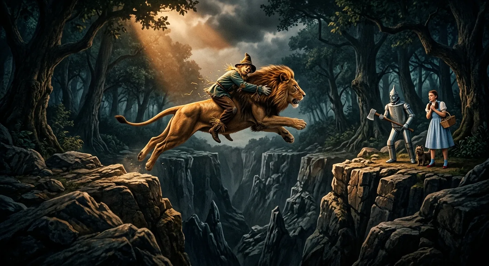
Leaping Chasms in the Dark Forest
Night fell upon the travelers before they could find proper shelter, and so they made their camp beneath the spreading branches of a great forest tree, its thick canopy serving well enough to shield them from the evening dew. The Tin Woodman proved his usefulness at once, chopping a fine pile of wood with his axe, and Dorothy built up a splendid fire that chased away the loneliness creeping into her heart. She and Toto shared the last of their bread between them, and the girl wondered with some worry what they might find for breakfast.
The Lion, ever practical in his own way, offered to hunt a deer for Dorothy's meal, remarking with some bemusement on her peculiar preference for cooked food. But the Tin Woodman begged him not to, confessing he would surely weep at the death of a poor deer, and then his jaws would rust again. So the Lion slipped away into the darkness to find his own supper—what it was, no one ever learned, for he kept the matter to himself. The Scarecrow, meanwhile, discovered a tree heavy with nuts and set about filling Dorothy's basket, though his padded hands proved terribly clumsy for such delicate work. He dropped nearly as many as he gathered, yet he did not mind the slow going, for the task kept him safely distant from the fire and its dangerous sparks. When Dorothy lay down to sleep, he covered her tenderly with dry leaves, and she slumbered warm and snug until morning light.
The new day began pleasantly enough, with Dorothy washing her face in a little brook before the companions set out once more toward the Emerald City. But this day would prove eventful indeed. Within an hour's walk, they discovered a tremendous ditch cutting across the yellow brick road, so wide and deep and lined with jagged rocks that their journey seemed suddenly impossible. Dorothy's heart sank as she asked what could be done, and even the Tin Woodman confessed he hadn't the faintest idea.
It was the Scarecrow who reasoned through the problem, and the Cowardly Lion who provided the solution—he believed he could leap across, carrying each companion on his back in turn. The Scarecrow bravely volunteered to go first, sensibly noting that a fall would harm him least of all. The great beast crouched at the edge, then sprang magnificently through the air to land safely on the far side. One by one he carried them all across, and they rested afterward while the Lion caught his breath.
The forest grew darker and more forbidding beyond the ditch, and soon the Lion whispered of the Kalidahs—terrible creatures with bears' bodies and tigers' heads, whose claws could tear him in two. Dorothy shuddered at the thought. Before long, they faced another gulf, far too wide for even the Lion to jump. The Scarecrow suggested felling a great tree to serve as a bridge, and the Tin Woodman's sharp axe made quick work of it. But just as they began to cross, two Kalidahs came rushing toward them with horrible growls.
The Lion roared so fiercely that even the monsters paused, but they soon pressed forward again. In a moment of desperate cleverness, the Scarecrow called for the Woodman to chop away their end of the tree-bridge. The axe fell swift and true, and the tree plunged into the gulf with both snarling beasts upon it, dashing them to pieces on the rocks below.
Shaken but alive, the travelers pressed on with renewed urgency, walking so quickly that Dorothy grew tired and rode upon the Lion's back. At last the trees thinned, and by afternoon they reached a broad, swift-flowing river. Beyond it lay a beautiful country of green meadows and flowering fields, and the yellow brick road continuing on toward their destination. The Scarecrow proposed building a raft, and the tireless Tin Woodman set to work chopping trees. Night came before the task was finished, so they made camp by the riverbank, and Dorothy fell asleep dreaming of the Emerald City and the wonderful Wizard who would surely send her home.
But rivers, as the companions would soon learn, have currents of their own and care nothing for the plans of travelers.
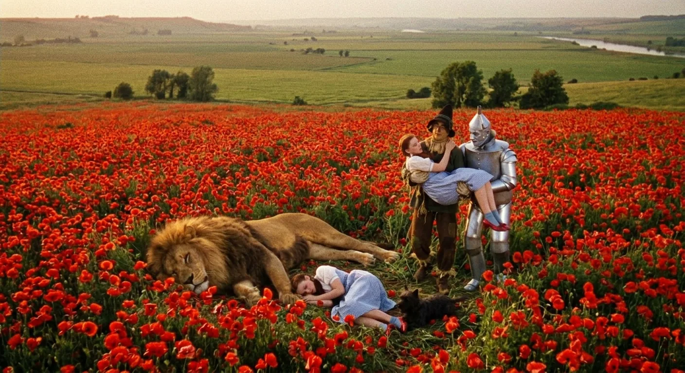
The Scarecrow Stranded in the River
The morning dawned bright and promising for our little band of travelers, who rose from their rest refreshed and brimming with hope. Dorothy made a fine breakfast of peaches and plums plucked fresh from the trees along the riverbank, eating as contentedly as any princess might. The dark forest with all its discouragements now lay safely behind them, and ahead stretched a lovely, sun-drenched country that seemed to call them onward toward the Emerald City.
Yet between them and that beautiful land flowed the broad river, cutting off their path. The Tin Woodman had nearly finished constructing their raft, and after fastening a few more logs together with wooden pins, they were ready to cross. Dorothy settled herself in the middle with Toto held close in her arms, while the Cowardly Lion's great weight caused the raft to tip alarmingly when he stepped aboard. The Scarecrow and the Tin Woodman steadied things by standing opposite, each armed with a long pole to push them through the water.
All went well enough at first, but midway across, the swift current caught hold of the raft and swept it downstream, carrying them ever farther from the road of yellow brick. The water deepened until even the long poles could not find bottom. Each companion voiced their fear of what failure would mean—no brains for the Scarecrow, no courage for the Lion, no heart for the Tin Woodman, and no return to Kansas for Dorothy. In his desperate effort to push them forward, the Scarecrow thrust his pole so firmly into the riverbed mud that when the raft swept away, he found himself stranded, clinging to that pole in the middle of the rushing water.
The Cowardly Lion proved his hidden bravery then, plunging into the river and swimming with all his might while the Tin Woodman held fast to the tip of his tail. Together they pulled the raft to shore, though the current had carried them far from their road.
They walked along the pretty riverbank, hoping to find their way back, when they spotted their poor friend still perched upon his pole, looking terribly lonely and sad. Fortune smiled upon them in the form of a kind Stork who, learning the Scarecrow was stuffed only with straw, flew out and carried him safely back to his companions. Such joy followed their reunion that the Scarecrow sang "Tol-de-ri-de-oh!" at every step.
The countryside grew ever more beautiful as they traveled on, the ground becoming carpeted with flowers of every hue—yellow and white, blue and purple, and great brilliant clusters of scarlet poppies. Dorothy breathed in their spicy scent with delight, not knowing the deadly danger. For when too many poppies grow together, their powerful odor causes any creature of flesh to fall into an endless sleep.
Soon Dorothy's eyes grew impossibly heavy, and despite her companions' urging, she collapsed among the crimson blossoms. Little Toto fell beside her, and even the great Lion could feel himself succumbing. The Scarecrow sent the Lion running ahead while he and the Tin Woodman—neither being made of flesh and therefore untroubled by the poison—fashioned a chair of their hands and arms to carry the sleeping girl and her dog.
On and on they walked through the seemingly endless field of deadly flowers until they came upon the Lion himself, lying motionless among the poppies. He had fallen just short of the sweet green grass beyond, too heavy for them to move. With sorrowful hearts, they left their cowardly friend behind, carrying Dorothy to a pretty spot by the river where fresh breezes might revive her, and there they waited—hoping that somehow fortune would smile upon them once more.
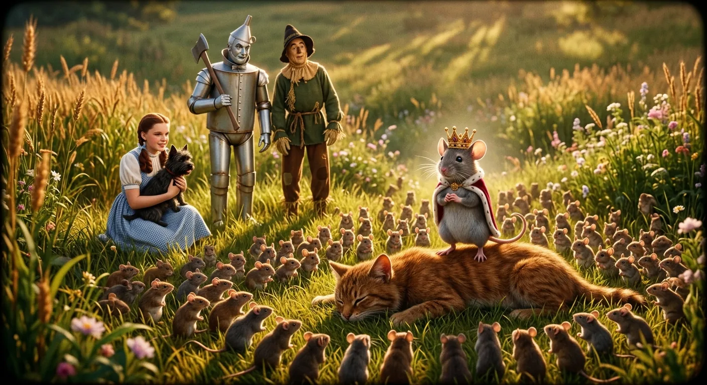
Tiny Heroes Save the Cowardly Lion
As the Scarecrow stood surveying the countryside beside Dorothy, he reckoned they could not be far now from the road of yellow brick, having traveled nearly as great a distance as the river had carried them astray. But before the Tin Woodman could offer his reply, a low growl reached his tin ears, and turning his head upon its well-oiled hinges, he beheld a fearsome sight bounding through the grass toward them.
A great yellow Wildcat came racing across the field, its ears pressed flat against its skull, its mouth stretched wide to reveal two rows of wicked teeth, and its eyes burning red as twin balls of fire. Yet the Woodman quickly perceived that the beast was not hunting them at all—it was chasing a tiny gray field mouse that scurried desperately before it. Though the Tin Woodman possessed no heart within his hollow chest, he understood at once that it was wrong for such a terrible creature to destroy something so small and harmless.
Without hesitation, he raised his sharp axe, and as the Wildcat bounded past, he delivered a swift blow that severed the beast's head clean from its body. The creature tumbled at his feet in two pieces, and the little mouse, finding itself suddenly free from danger, stopped short and crept cautiously toward its rescuer.
In a squeaky voice, the mouse offered its thanks, but the Woodman humbly waved away such gratitude, explaining that having no heart, he was particularly careful to help all those in need of a friend—even if only a mouse. At this, the tiny creature drew itself up indignantly and declared that she was no ordinary mouse, but rather the Queen of all the Field Mice.
Scarcely had the Woodman made his bow when dozens of mice came scampering up, bowing so low to their sovereign that they nearly stood upon their heads. The Queen proclaimed that henceforth all her subjects must serve the funny tin man who had saved her life. Yet their solemn oath was interrupted when Toto, awakening from his sleep, spotted the gathering of mice and leaped joyfully into their midst, scattering them in terror.
The Tin Woodman caught the little dog in his arms and held him fast, calling the mice back with promises of safety. When they had cautiously returned, one of the largest among them asked how they might repay their debt. The Scarecrow, seizing upon the moment despite his straw-stuffed head, proposed that the mice might save their friend the Cowardly Lion, who lay sleeping in the deadly poppy bed.
Though the Queen trembled at the thought of approaching a lion, the Scarecrow assured her this particular lion was a coward who would never harm their friends. And so a plan was hatched: thousands of mice would be summoned, each bringing a length of string, while the Tin Woodman fashioned a sturdy truck from tree limbs to carry the great beast.
The mice arrived in vast numbers—big and little and middle-sized—each bearing string in its mouth. Dorothy, awakening from her enchanted sleep, found herself surrounded by thousands of timid little creatures and was properly introduced to their dignified Queen. Together they harnessed the mice to the truck, and though it was a thousand times larger than any single mouse, the combined strength of the multitude pulled it with ease.
With tremendous effort, they loaded the sleeping Lion onto the truck, and the Queen hurriedly ordered her people forward, fearing the poppies might claim them too. The Woodman and Scarecrow pushed from behind until at last they rolled their friend free of the poisonous flowers and into the sweet air of the green fields beyond.
Dorothy thanked the mice warmly for saving her beloved companion, and the little creatures scampered home through the grass. The Queen departed last, promising that should they ever need help again, they had only to call from the field, and her people would come.
As the travelers settled beside the still-sleeping Lion to await his awakening, the Scarecrow fetched Dorothy fruit from a nearby tree, and she ate her simple dinner in the peaceful meadow—though none could say how long it might be before their great friend stirred again.
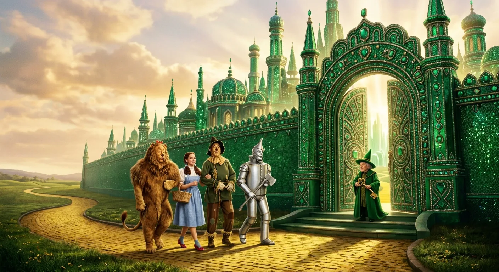
The Green Land and Its Mysteries
The Cowardly Lion slumbered long among the poppies, his great tawny body drinking in their poisonous perfume, but at last he awakened and rolled himself off the truck, blinking in wonder to find himself still among the living. When his companions told him how the tiny field mice had dragged him to safety, the Lion could not help but laugh at the strangeness of it all—that such small creatures should save one who had always thought himself so big and terrible, while mere flowers had nearly claimed his life.
With the Lion restored to his full strength, the little band set off once more through the soft, fresh grass until they found their way back to the road of yellow brick. The country about them had grown beautiful beyond measure, and they rejoiced to leave the dark forest and its many dangers far behind. Soon they noticed that everything around them had taken on a decidedly green hue—the fences, the farmhouses, even the clothing of the people who peered at them from doorways but dared not approach on account of the great Lion padding alongside them.
Dorothy declared this must surely be the Land of Oz, and they were drawing near their destination at last. Yet the Scarecrow observed that these folk seemed far less friendly than the Munchkins had been, and he worried they might find no shelter for the night. Dorothy, hungry for something more substantial than fruit, resolved to ask at the next farmhouse they passed.
A cautious woman answered the door, eyeing the Lion with considerable alarm. But when Dorothy assured her that her companion was not only tame but a great coward who would be more frightened of them than they of him, the woman relented and welcomed the strange company inside. There they found her husband, laid up with an injured leg, and two children, all marveling at their unusual guests.
When the travelers revealed they were bound for the Emerald City to see the Great Oz, the man grew thoughtful. He had visited that beautiful and wonderful place many times, he told them, yet never once had he—nor anyone he knew of—been permitted to see the Wizard face to face. Oz was said to sit forever in his Throne Room, never venturing out, appearing to different people in different forms: sometimes as a bird, sometimes an elephant, sometimes a cat or a fairy. What his true form might be, no living person could tell.
Still, the man assured them that if anyone could grant their wishes, it was Oz. The Wizard had brains to spare for the Scarecrow, a collection of hearts for the Tin Woodman, and a great pot of courage covered with a golden plate for the Lion. As for Dorothy's Kansas—well, Oz could do anything, so surely he could find it. The difficulty would be getting him to see them at all.
After a good supper and a restful night, the travelers set out at sunrise and soon beheld a beautiful green glow brightening in the sky before them. By afternoon they had reached the great wall surrounding the Emerald City, where a magnificent gate studded with glittering emeralds stood at the end of the yellow brick road.
A little green man greeted them inside—the Guardian of the Gates—and when he learned they wished to see Oz, he sat down in astonishment. Before he would take them to the Palace, however, he insisted they must each wear spectacles with green lenses, locked fast around their heads, lest the brightness of the city blind them forever. With everyone properly fitted—even little Toto—the Guardian took up a great golden key and led them through the portal into the dazzling streets beyond.
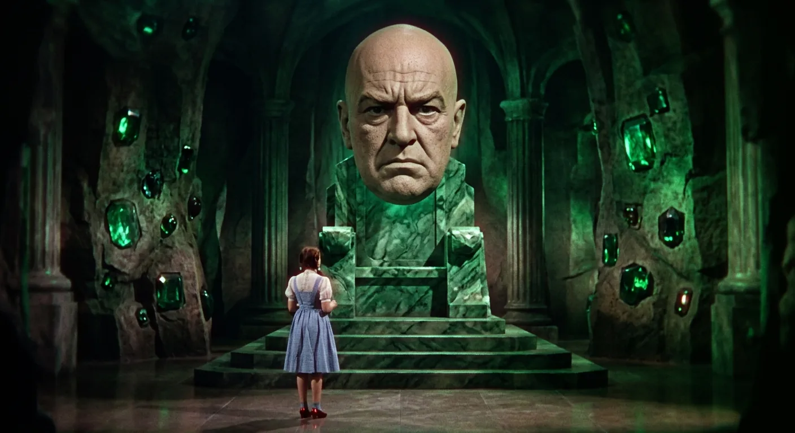
A City Bathed in Emerald Light
Even with eyes shielded behind green spectacles, Dorothy and her companions found themselves quite dazzled by the brilliance that greeted them at every turn. The Emerald City lived up to its name in ways beyond imagining—green marble houses studded with sparkling gems lined streets paved in the same verdant stone, emeralds gleaming between every block. The window panes shone green, the very sky wore a green tint, and even the sun's rays fell upon them in shades of green.
The citizens, all dressed in green clothes with greenish skin, regarded the strangely assorted company with wondering eyes. Children fled behind their mothers at the sight of the Lion, though no one spoke a word to the travelers. Green candy and green popcorn, green shoes and green hats filled the shop windows, and at one stand a man sold green lemonade to children who paid with green pennies. There were no horses to be seen—only little green carts pushed by hand. Everyone appeared happy, contented, and prosperous in this remarkable place.
The Guardian of the Gates led them to the Palace of Oz, a grand building standing exactly in the center of the City, where a soldier with a long green beard admitted them into a magnificent room of green carpet and emerald-studded furniture. The soldier disappeared to carry their message to the Wizard, and when he returned at last, he delivered curious news: Oz would see them, but only one visitor each day, and none had ever actually laid eyes upon him—the soldier himself had spoken to him only from behind a screen. The Wizard had shown particular interest upon hearing of Dorothy's silver shoes and the mark upon her forehead.
A green maiden with lovely green hair showed each traveler to their quarters. Dorothy's room was the sweetest imaginable, with silk sheets, a green velvet counterpane, and a tiny fountain spraying green perfume into the air. That night, each companion passed the hours according to their nature—the Scarecrow stood stupidly in one spot watching a spider spin its web, the Tin Woodman lay moving his joints to keep them working, and the Lion rolled himself up like a cat and purred himself to sleep.
The next morning, Dorothy entered the Throne Room alone and found herself before an enormous Head—bald, without body or limbs, sitting upon a throne of green marble. When the great voice demanded to know who she was, Dorothy answered bravely: "I am Dorothy, the Small and Meek. I have come to you for help." She wished only to return to Kansas, to Aunt Em and Uncle Henry. But the Wizard's answer struck her heart cold—she must first kill the Wicked Witch of the West.
Dorothy wept and protested that she had never killed anything willingly, but Oz would not relent. She returned to her friends in despair and cried herself to sleep.
On the following days, each companion entered the Throne Room in turn—and each beheld a different form of Oz. The Scarecrow saw a beautiful winged Lady; the Tin Woodman faced a terrible five-eyed Beast; and the Lion trembled before a fierce Ball of Fire. Yet to each, the Wizard gave the same demand: kill the Wicked Witch of the West, and your wish shall be granted.
When they gathered again, Dorothy voiced what they all felt: "What shall we do now?" The Lion answered simply—they must journey to the land of the Winkies and destroy the Witch themselves. Though Dorothy declared she did not want to kill anybody, even to see Aunt Em again, and each friend confessed their own fears and limitations, they resolved to go together. The Tin Woodman sharpened his axe, the Scarecrow stuffed himself with fresh straw, and the green girl filled Dorothy's basket with provisions.
They retired early that night, sleeping soundly until awakened by the crowing of a green cock and the cackling of a hen who had laid a green egg—for tomorrow, their most perilous journey would begin.
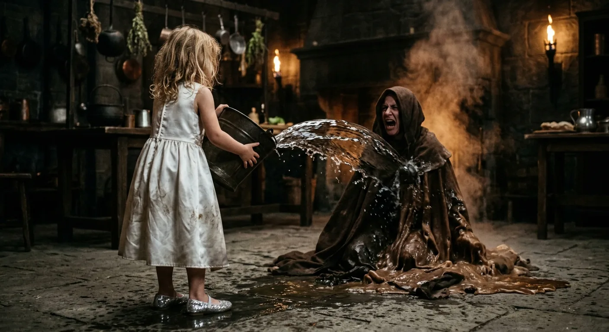
The Witch's Wrath Unleashed
The soldier with the green whiskers led Dorothy and her companions back through the gleaming streets to the Guardian of the Gates, who unlocked their spectacles and returned them to his great box before politely opening the gate. When Dorothy inquired which road led to the Wicked Witch of the West, the Guardian offered a troubling reply: there was no road at all, for no one ever wished to go that way. Finding the Witch, he explained, would be easy enough—she would find them first and make them all her slaves. The Scarecrow declared their intention to destroy her instead, and the Guardian, surprised but cautious, warned them to keep to the West, where the sun sets, and take care, for the Witch was wicked and fierce.
They bade him farewell and set off across fields of soft grass dotted with daisies and buttercups. Dorothy discovered that her pretty silk dress, once green in the Emerald City, had turned pure white, as had the ribbon around Toto's neck. The landscape grew rougher and hillier as they traveled, with no farms or houses to be found. By afternoon, the sun beat hot upon their faces, and Dorothy, Toto, and the Lion lay down to sleep while the Woodman and the Scarecrow kept watch.
Now the Wicked Witch of the West had but one eye, yet it was as powerful as a telescope and could see everywhere. From her castle door, she spied Dorothy sleeping with her friends and grew furious to find strangers in her country. She blew upon a silver whistle, summoning forty fierce wolves to tear them to pieces. But the Tin Woodman met them with his sharp axe and slew every last one. The next morning, the Witch saw her wolves lying dead and blew her whistle twice, sending a great flock of wild crows to peck out their eyes. The Scarecrow stood his ground and twisted the neck of every crow until all forty lay dead beside him.
Enraged, the Witch blew three times and sent a swarm of stinging bees. The Scarecrow had the Woodman scatter his straw over Dorothy, Toto, and the Lion, while the bees broke their stings against the Woodman's tin and perished. When even her Winkie slaves fled at the Lion's roar, the Witch turned to her last and greatest power: the Golden Cap, which could summon the Winged Monkeys three times. She had used it twice before—once to enslave the Winkies and once to drive out the Great Oz himself. Now she used it for the final time.
The Winged Monkeys descended upon the travelers, dropping the Tin Woodman onto sharp rocks, pulling the straw from the Scarecrow, and binding the Lion with ropes. But when their leader approached Dorothy, he saw the mark of the Good Witch's kiss upon her forehead and dared not harm her, for the Power of Good was greater than the Power of Evil. They carried her gently to the Witch's castle and departed forever.
The Witch trembled at the sight of Dorothy's Silver Shoes but saw the innocence in the child's eyes and knew she did not understand their power. She set Dorothy to work in the kitchen and attempted to harness the Lion, but he roared so fiercely she dared not enter his yard. Each night, Dorothy secretly fed him, and together they dreamed of escape.
The Witch longed desperately for the Silver Shoes and finally devised a cunning trick, making an iron bar invisible on the kitchen floor. Dorothy stumbled and lost one shoe, which the Witch snatched away. Furious, Dorothy demanded its return, and when the Witch laughed and refused, the little girl grabbed a bucket of water and dashed it over her. The Witch shrieked in terror and began to melt away like brown sugar, crying out that she had been wicked but never thought a little girl would be her end.
When nothing remained but a shapeless brown mass, Dorothy swept it out the door, retrieved her silver shoe, and ran to tell the Lion the glorious news—the Wicked Witch of the West was no more, and they were prisoners no longer.
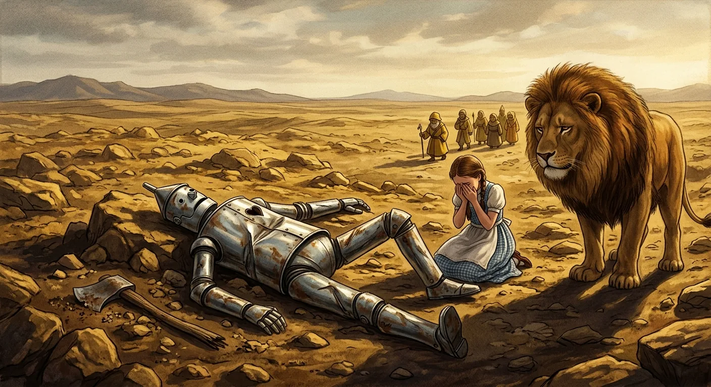
Reunited at the Yellow Castle
When word reached the Cowardly Lion that the Wicked Witch had been reduced to nothing more than a puddle by a simple bucket of water, his relief was immense. Dorothy wasted no time in unlocking the gate of his prison, and together they made their way into the castle, where the girl's thoughts turned immediately to those who had suffered under the Witch's cruelty. She gathered the yellow Winkies and delivered the news they had scarcely dared to dream: they were slaves no longer.
The rejoicing that followed was extraordinary. These gentle folk had labored under the Witch's harsh hand for more years than they cared to remember, and now they declared the day a holiday forevermore, filling the castle with feasting and dancing. Yet even amid such celebration, the Lion's heart remained troubled. If only the Scarecrow and the Tin Woodman were with them, he said, his happiness would be complete.
Dorothy, ever faithful to her friends, asked whether a rescue might be possible. The Lion thought they could try, and when they put the question to the Winkies, those grateful people declared they would do anything in their power for the girl who had freed them from bondage.
And so a search party set out across the land, traveling through that day and into the next until they reached a rocky plain where a pitiful sight awaited them. There lay the Tin Woodman, battered and bent beyond recognition, his axe rusted and broken beside him. The Winkies lifted him with great tenderness while Dorothy shed quiet tears for her old friend, and even the Lion wore a look of solemn sorrow.
Back at the Yellow Castle, Dorothy inquired whether any among the Winkies were tinsmiths. Indeed there were, and they came with their baskets of tools, setting to work with remarkable dedication. For three days and four nights they labored—hammering and twisting, bending and soldering, polishing and pounding—until at last the Tin Woodman stood restored to his old form. He bore several patches now, but being no vain creature, he minded them not at all.
When he walked into Dorothy's room to thank her, the Woodman wept tears of pure joy, and Dorothy had to wipe each one carefully with her apron lest his joints rust. Her own tears flowed freely too, though these required no such attention. The Lion, meanwhile, dabbed at his eyes so often with his tail that he was obliged to dry it in the courtyard sun.
Still their company remained incomplete. The Scarecrow must be found, and so once more they journeyed forth, this time to the tall tree where the Winged Monkeys had scattered his clothes among the branches. The trunk stood too smooth for climbing, but the Tin Woodman—now wielding an axe with a handle of solid gold, crafted by a Winkie goldsmith, its blade polished to gleaming silver—made quick work of chopping it down. Dorothy gathered the clothes, the Winkies stuffed them with fresh clean straw, and behold: the Scarecrow stood before them once more, whole and grateful.
Reunited at last, the friends enjoyed several peaceful days at the castle. But soon Dorothy's thoughts drifted homeward to Aunt Em, and she reminded her companions that the Wizard's promise still awaited them. Tomorrow, they agreed, they would set out for the Emerald City.
The Winkies bade them farewell with heavy hearts, showering them with gifts: golden collars for Toto and the Lion, a diamond bracelet for Dorothy, a gold-headed walking stick for the Scarecrow, and a jeweled silver oil-can for the Tin Woodman. Dorothy, rummaging through the Witch's cupboard for provisions, discovered a pretty Golden Cap and placed it upon her head, unaware of the powerful charm it held.
With three cheers from their Winkie friends ringing in their ears, the travelers turned their faces eastward toward the Emerald City, where promises waited to be claimed and destinies waited to be fulfilled.
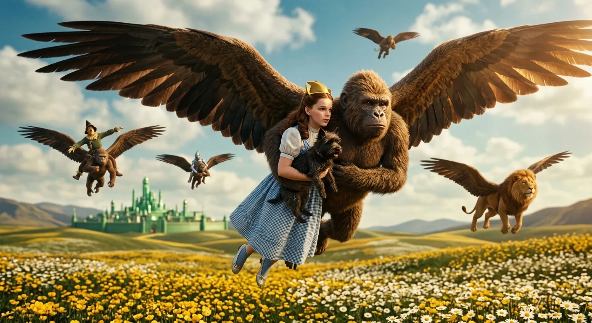
Lost in Fields of Yellow Flowers
With the Wicked Witch vanquished and the Golden Cap now in Dorothy's possession, the four travelers set out to return to the Emerald City—yet they soon discovered that finding their way back proved far more difficult than the journey there had been. When they had first sought the Witch, she had spied them coming and sent her Winged Monkeys to carry them through the air. Now, walking on their own two feet (and four paws, in Toto's case), they found themselves hopelessly turned about in the great fields of buttercups and yellow daisies that stretched endlessly before them.
They knew they must travel east, toward the rising sun, and started off confidently enough. But when noon arrived and the sun hung directly overhead, they could no longer tell east from west, and so they wandered, lost among the sweet-smelling flowers. Night fell, the moon rose bright and silver, and they slept peacefully in the fragrant fields—all except the Scarecrow and the Tin Woodman, who needed no rest and kept silent watch.
Morning brought clouds that hid the sun, yet still they pressed onward, trusting in Dorothy's simple wisdom: "If we walk far enough, I am sure we shall sometime come to some place." But days passed, and the scarlet fields offered no landmarks, no signs of the Emerald City. One by one, the companions began to despair. The Scarecrow grumbled about never receiving his brains; the Tin Woodman lamented that he could scarcely wait for his heart; the Cowardly Lion whimpered that he lacked the courage to tramp forever without arriving anywhere. Even little Toto, for the first time in his life, was too weary to chase a passing butterfly.
It was then that Dorothy thought of the field mice and the little silver whistle the Queen had given her. She blew upon it, and within minutes the pattering of tiny feet announced the arrival of many small gray mice, their Queen among them. When Dorothy explained their predicament, the Queen informed them—rather matter-of-factly—that they had been walking the wrong direction entirely, with the Emerald City at their backs all along.
But the Queen had noticed something else: the Golden Cap upon Dorothy's head. Why not use its charm, she suggested, and summon the Winged Monkeys? They could carry the travelers to Oz in less than an hour. Dorothy had not known the Cap possessed any magic, but the Queen explained that the charm was written inside. With a hasty warning that the Monkeys were full of mischief and loved to plague mice, the Queen scampered away with her subjects.
Dorothy read the strange words carefully—"Ep-pe, pep-pe, kak-ke!" standing on her left foot, "Hil-lo, hol-lo, hel-lo!" on her right, and "Ziz-zy, zuz-zy, zik!" on both—and immediately the sky filled with the chattering and flapping of wings as the Winged Monkeys descended. Their King bowed low and asked what she commanded. When she requested passage to the Emerald City, the Monkeys lifted each traveler gently into the air.
During the flight, the Monkey King told Dorothy the tale of how his people came to be bound by the Golden Cap—a story of mischief, a princess-sorceress named Gayelette, her beloved Quelala, and a prank involving the river that had cost the Monkeys their freedom forever. Three times must they obey whoever wears the Cap, and now that Cap belonged to Dorothy.
Before the story had finished, the green shining walls of the Emerald City appeared below, and the Monkeys set the travelers down gently before the gates, their King bowing once more before flying swiftly away with his band.
"That was a good ride," Dorothy declared, and the Lion agreed it had been a quick way out of their troubles—though none of them yet knew what reception awaited them behind those emerald walls.
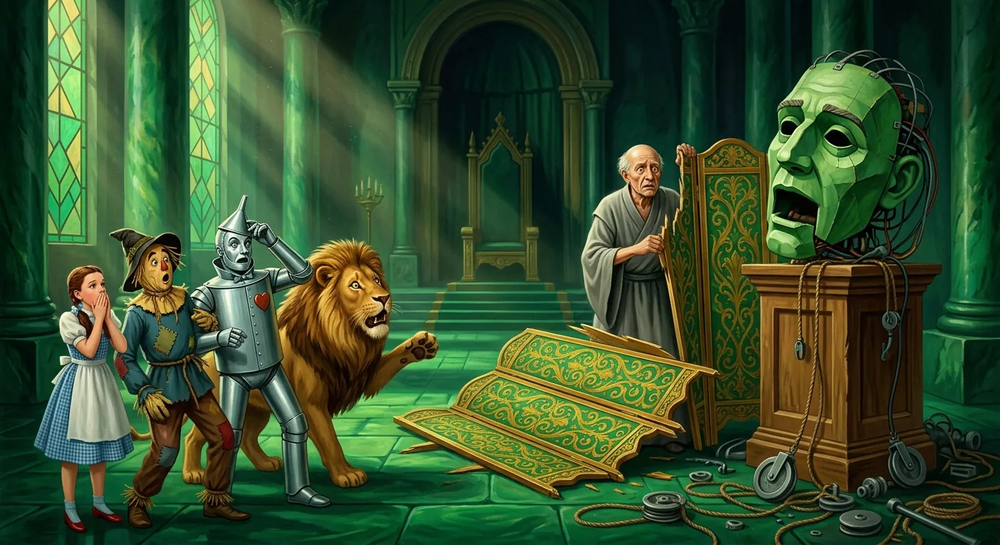
The Man Behind the Screen
The four travelers returned to the great gate of Emerald City as conquering heroes, though they did not yet know the hollow nature of the victory that awaited them within the Palace walls. The Guardian of the Gates could scarcely believe his eyes when he saw them standing there, alive and whole, for who had ever visited the Wicked Witch of the West and returned to tell of it? When he learned that Dorothy had melted the terrible creature, he bowed so low before the little girl from Kansas that his nose nearly touched the ground.
Word of their triumph spread through the city like wildfire, and a great crowd followed them to the Palace, yet the Great Oz himself remained strangely silent. One day passed, then another, and still no summons came from the Throne Room. The waiting grew tiresome and vexing, for had they not suffered hardships and slavery at the Wizard's bidding? At last the Scarecrow sent a message of his own—if Oz would not receive them at once, they would call upon the Winged Monkeys to help them discover whether the great Wizard kept his promises. This threat worked wonderfully well, for Oz had met those creatures before and had no wish to meet them again.
When they entered the Throne Room the following morning, they found it utterly empty, more dreadful in its stillness than any of the terrible forms they had seen before. A great Voice echoed from the dome above, claiming to be everywhere yet invisible, but the travelers would not be put off any longer. They demanded what had been promised them—brains, heart, courage, and passage home to Kansas.
Then the Lion, thinking to frighten the Wizard into action, let loose such a fierce and dreadful roar that little Toto jumped away in alarm and knocked over a screen standing in the corner. Behind it stood not a great Head nor a lovely Lady nor a terrible Beast nor a Ball of Fire, but merely a little old man with a bald head and a wrinkled face, trembling with fear.
"I am Oz, the Great and Terrible," he confessed in a quavering voice, "but please don't strike me, and I'll do anything you want."
The truth came tumbling out. The great Wizard was nothing but a common man from Omaha, a ventriloquist and balloonist who had been carried to this strange land by accident. Finding the people believed him powerful because he had descended from the clouds, he had let them go on believing it, ordering them to build the Emerald City and wearing green spectacles upon every nose so that all they saw appeared green. The great Head was paper and wire, the lovely Lady a dress and mask, the terrible Beast sewn skins and wooden slats, the Ball of Fire merely oiled cotton set aflame.
"You're a humbug," said the Scarecrow in a grieved tone, and the little man agreed that this was exactly so.
Yet even a humbug may possess a certain wisdom. Oz told the Scarecrow that experience, not brains, brings knowledge; he told the Lion that true courage means facing danger despite one's fear; he warned the Tin Woodman that hearts bring mostly unhappiness. But seeing their desperate need to believe, he promised to provide what they asked—brains, courage, and heart—the very next morning. As for Dorothy, he would need a few days to devise a way to carry her back over the desert to Kansas.
They agreed to keep his secret and departed in surprisingly high spirits, for even a humbug's promises seemed better than none at all, and tomorrow held the hope of wishes fulfilled.
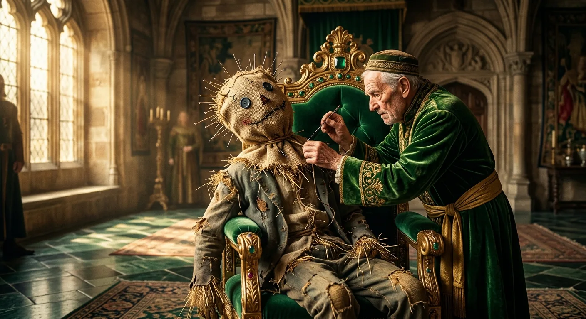
Bran, Silk, and Bottled Courage
Morning came to the Emerald City, and with it arrived the hour the Scarecrow had long awaited. He gathered his companions together with an announcement that fairly trembled with anticipation—he was going to Oz at last, to receive the brains he had journeyed so far to obtain. When he returned, he declared, he would be as other men are.
Dorothy, in her simple and honest way, told him she had always liked him just as he was. But the Scarecrow, though touched by her kindness, remained convinced that surely she would think more of him once she heard the splendid thoughts his new brain would produce. And so, with cheerful goodbyes upon his painted lips, he made his way to the Throne Room and rapped upon the door.
Inside, he found the little man who was Oz sitting by the window, apparently lost in deep thought. The Scarecrow announced his purpose, and Oz, ever practical, explained that he would need to remove the Scarecrow's head entirely to place the brains in their proper position. The Scarecrow agreed readily enough—what did he care about losing his head, so long as it came back better than before?
The Wizard set to work. He unfastened the Scarecrow's head and emptied out all the straw within. Then, retreating to his back room, he measured out a quantity of bran and mixed it thoroughly with a great many pins and needles. This curious mixture he packed into the top of the Scarecrow's head, stuffing the remaining space with straw to hold everything in place. When the head was fastened on once more, Oz proclaimed with evident satisfaction that the Scarecrow would hereafter be a great man, for he had been given a lot of *bran-new* brains.
The Scarecrow returned to his friends, his head bulging noticeably at the top. Dorothy observed him with curiosity, and when she asked how he felt, he answered with perfect earnestness that he felt wise indeed—and that once he grew accustomed to his brains, he would know everything. The Tin Woodman noticed the pins and needles protruding from his friend's head, and the Lion remarked that this was surely proof the Scarecrow was sharp.
Next came the Tin Woodman's turn. Oz cut a small square hole in his tin breast and placed within it a pretty heart made of silk and stuffed with sawdust. The Woodman asked if it was a kind heart, and Oz assured him it was very kind indeed. The patch was soldered neatly back into place, and the Woodman departed, overflowing with gratitude.
The Cowardly Lion followed, and Oz presented him with a square green bottle whose contents he poured into a carved dish. Courage, the Wizard explained, was always inside a person—therefore this liquid could only become courage once swallowed. The Lion drank every drop and declared himself full of courage at last.
Left alone, Oz allowed himself a small, knowing smile. How easy it had been to satisfy them all, for they had imagined he could do anything. But Dorothy's wish—to return to Kansas—that would require something far beyond imagination, and the little humbug hadn't the faintest idea how it might be accomplished.
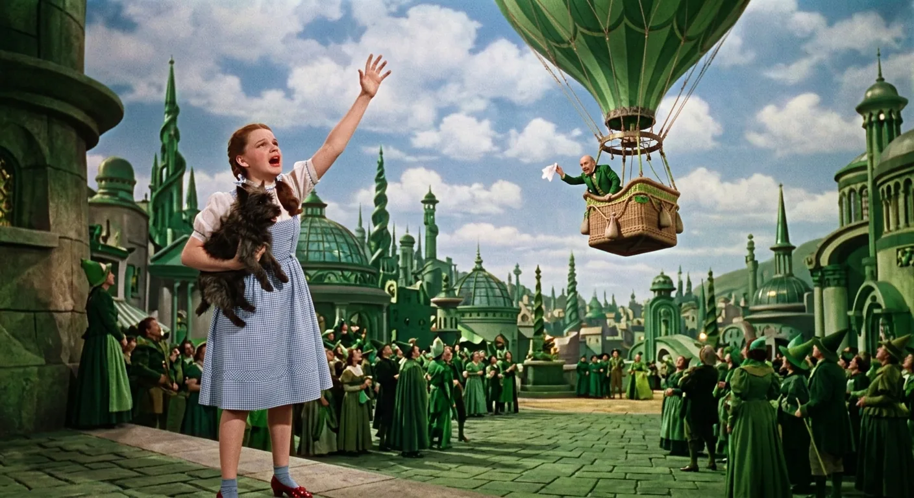
Oz and Dorothy Build Their Escape
Three days of silence passed, and they were sad days indeed for Dorothy. While she waited and wondered, her friends found themselves quite content with their newfound gifts. The Scarecrow spoke of wonderful thoughts rattling about in his head, though he would share none of them, for he believed no one could possibly understand such brilliant ideas but himself. The Tin Woodman walked about with great satisfaction, feeling his heart knocking gently against his tin breast, and he declared to Dorothy that this new heart was far kinder and more tender than the flesh-and-blood one he had possessed so long ago. As for the Cowardly Lion, he feared nothing now—not an army of soldiers, not even a dozen of those terrible Kalidahs could make him tremble.
And so each member of their little party was satisfied, each one except Dorothy, who longed more than ever for the Kansas prairies and the little farmhouse where Aunt Em would be waiting.
On the fourth day, her patience was rewarded. Oz summoned her to the Throne Room, where he greeted her with welcome news: he believed he had found a way to carry her out of this strange country. Kansas itself he could not promise, for he hadn't the faintest notion which direction it lay, but crossing the great desert—that was the first step, and after that, surely she could find her way home.
The little man explained his plan with the enthusiasm of one who had given the matter considerable thought. A balloon had brought him to this land, and a cyclone had delivered Dorothy. It seemed only fitting that the air should carry her back again. He could not conjure a cyclone, of course, but a balloon—that he could make. There was silk aplenty in the Palace, and glue enough to coat it. The only trouble was the gas; there was none to be found in all the land. Hot air would have to do instead, though it came with its own dangers. Should the air cool, the balloon would sink, and they would find themselves stranded in the deadly desert.
Dorothy's heart leaped at one small word. *We*, he had said. The Wizard intended to go with her! He confessed readily enough that he was weary of being a humbug, tired of hiding in his rooms for fear his people would discover the truth. He longed to return to the circus life he had known before the balloon had carried him away to this peculiar place.
Together they set to work, Dorothy with needle and thread, Oz with scissors and silk. Strip by strip they fashioned the balloon—light green, dark green, emerald green—until after three days of patient labor they had sewn together a magnificent bag of silk, more than twenty feet long. Oz painted the inside with thin glue to hold the air, and a great clothes basket was fastened beneath with sturdy ropes.
When at last the balloon stood ready before the Palace, all the people of the Emerald City gathered to watch. Oz announced that he was departing to visit a brother Wizard who lived among the clouds, and he named the Scarecrow as ruler in his absence. The Tin Woodman built a roaring fire, and as Oz held the silken bag above the flames, it swelled and rose until the basket barely touched the ground.
"Come, Dorothy! Hurry!" the Wizard called, climbing into the basket.
But Dorothy could not find Toto. The little dog had dashed into the crowd, barking furiously at a kitten, and by the time she scooped him into her arms and ran back—*crack!* went the ropes, and the balloon rose swiftly into the sky without her.
She screamed for him to come back, but the Wizard could only call down his farewells as he floated higher and higher, until at last he disappeared altogether. Whether he ever reached Omaha, no one could say, but the people of the Emerald City remembered him fondly and took comfort in the wise Scarecrow he had left to govern them.
Still, Dorothy's heart sank as she watched her last hope drift away on the wind, leaving her stranded once more in a land far from home.
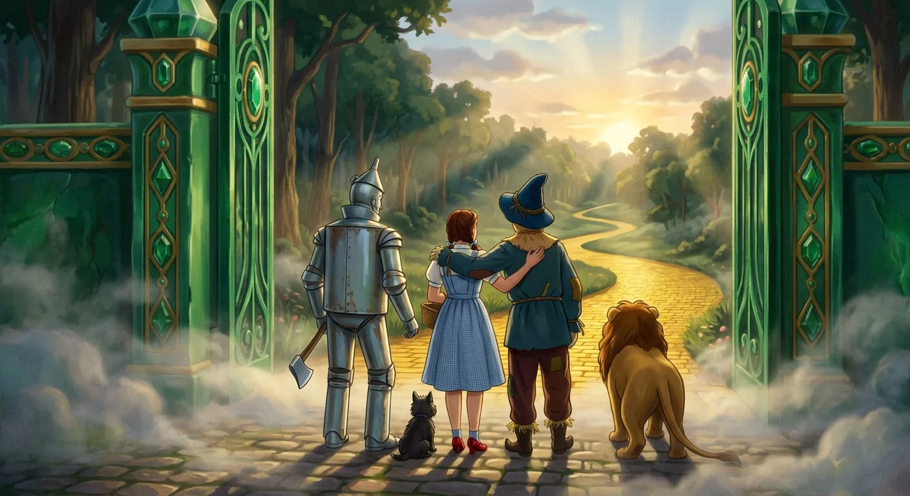
A New Hope in the South
Dorothy's heart grew heavy with the weight of lost hope as she watched her chance to return to Kansas float away with the Wizard's balloon. Yet even through her bitter tears, she could not help but feel a quiet relief that she had not been swept up into the sky in that uncertain contraption. And though Oz had proven himself no true wizard at all, she felt sorry to see him go, as did her loyal companions.
The Tin Woodman approached her with characteristic tenderness, declaring that he should be most ungrateful indeed if he failed to mourn the man who had bestowed upon him his lovely heart. He wished to weep, he said, if Dorothy would be so kind as to wipe away his tears before they caused him to rust. This she did with great care, watching each tear and catching it with a towel, and when he had finished his mourning, he oiled himself thoroughly with his jeweled oil-can to guard against any mishap.
Meanwhile, the Scarecrow had assumed his new position as ruler of the Emerald City, and the people took great pride in him. "There is not another city in all the world ruled by a stuffed man," they boasted, and so far as anyone knew, they were quite right in saying so.
The following morning, the four travelers gathered in the Throne Room to discuss their situation. The Scarecrow, seated grandly upon the big throne, remarked upon their good fortune—he was well satisfied with his rise from a farmer's pole to ruler of a beautiful city. The Tin Woodman declared himself content with his new heart, and the Lion spoke modestly of his newfound courage. Yet Dorothy could not share in their satisfaction. She wanted only to return to Kansas, to Aunt Em and Uncle Henry.
The Scarecrow thought so hard that the pins and needles began to stick out of his brains, and at last he suggested summoning the Winged Monkeys. Dorothy's heart leaped with joy, and she rushed to fetch the Golden Cap. But her hope was quickly dashed—the Monkey King explained that his kind belonged to this country alone and could never cross the desert into Kansas. Dorothy had wasted one of her precious wishes to no purpose.
Once more the Scarecrow set himself to thinking, his head bulging so horribly that Dorothy feared it might burst. He called for the soldier with the green whiskers, who timidly entered the Throne Room and suggested that Glinda, the Good Witch of the South, might know a way across the desert. Her castle stood at its very edge, and she was said to be both powerful and kind.
Though the soldier warned that the road south was full of dangers—wild beasts and a race of queer men who despised strangers—Dorothy's companions refused to let her travel alone. The Lion longed for the woods once more, the Tin Woodman offered his axe, and the Scarecrow declared he would never leave Dorothy's side, for she had lifted him from his pole and brought him all his good fortune.
And so, with hearts full of gratitude and resolve, the four friends agreed to set out together the very next morning, ready to face whatever perils awaited them on the long road to the Land of the South.
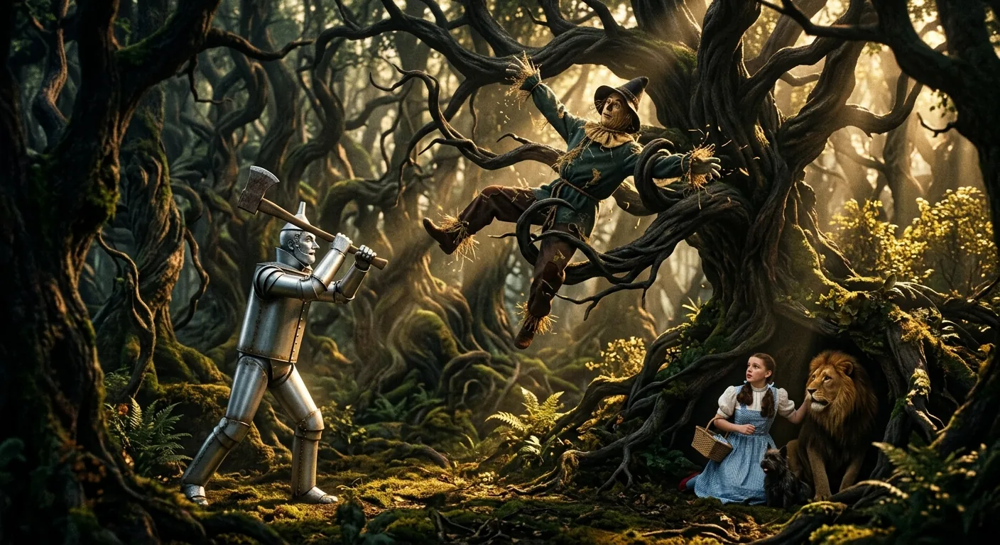
Journey South Through Enchanted Forests
The morning of departure dawned bright and clear as Dorothy kissed the pretty green girl farewell, and the little company—Scarecrow, Tin Woodman, Lion, and faithful Toto—shook hands with the soldier whose green whiskers had become so familiar to them during their time in the Emerald City. At the great gate, the Guardian expressed his wonder that anyone would willingly leave such a beautiful place to venture into unknown troubles, yet he dutifully unlocked and collected their green spectacles, returning them to their proper box, and sent them off with many good wishes.
Before they departed, the Guardian reminded the Scarecrow of his new responsibility as ruler, urging him to return as soon as possible. The Scarecrow, ever loyal to his friends, agreed he would do so—but only after seeing Dorothy safely home to Kansas. Dorothy herself offered heartfelt gratitude for the kindness shown her in the lovely city, though the Guardian gently told her not to trouble herself with thanks. They would have gladly kept her among them, he said, but if her heart was set on Kansas, he hoped she would find her way.
And so the outer gate swung open, and the travelers stepped forth into the sunshine, turning their faces toward the Land of the South where Glinda the Good was said to dwell. Their spirits soared with renewed hope. Dorothy felt certain she would reach home at last, while the Scarecrow and Tin Woodman took genuine pleasure in being useful to their dear friend. The Lion breathed deep the country air, whisking his tail in pure joy at leaving city life behind—for it had not agreed with him at all, and he was eager to prove his newfound courage to the wild beasts. Little Toto scampered about, chasing moths and butterflies, barking with unrestrained delight.
Pausing to take one last look at the Emerald City—its towers and steeples rising behind green walls, the Palace dome gleaming above all—the companions reflected on the Wizard they had known. The Tin Woodman felt his heart rattling contentedly in his breast; the Scarecrow praised the brains Oz had given him; the Lion wished only that Oz had taken some of his own courage. Dorothy remained silent, for the Wizard had failed to keep his promise to her—yet she forgave him, remembering he was a good man, even if he had been a poor wizard.
They traveled all that first day through green fields and bright flowers, sleeping peacefully beneath the stars. By morning they reached a thick wood that stretched endlessly in both directions, leaving them no choice but to pass through it. When the Scarecrow attempted to walk beneath a great spreading tree, its branches suddenly seized him, lifted him from the ground, and flung him back among his startled companions. Undeterred—for such treatment could not hurt him—the Scarecrow tried again at another tree, only to be tossed aside once more.
It was the Tin Woodman who solved their dilemma. Shouldering his axe, he marched toward the hostile tree, and when its branch bent down to grab him, he chopped through it with fierce determination. The tree shuddered as if in pain, allowing him to pass safely. The others rushed after him, though poor Toto was caught and shaken by a smaller branch until the Woodman freed him with another swift stroke.
The remaining trees let them pass without incident, and the travelers concluded that only the first row possessed this strange power—forest policemen, perhaps, meant to discourage strangers. They walked easily through the rest of the wood until they emerged at its edge, only to find themselves facing an unexpected obstacle: a high, smooth wall of white china, gleaming like the surface of a dish and rising above their heads.
Dorothy asked what they should do now, and the resourceful Tin Woodman declared he would build a ladder, for there was no question—they must certainly climb over and discover what strange land awaited them on the other side.
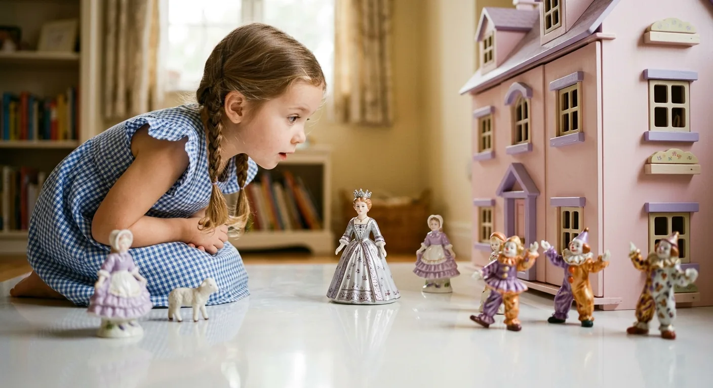
A Fragile Land of Living Porcelain
While the Tin Woodman busied himself constructing a ladder from forest timber, Dorothy surrendered to weariness and slept, the Lion curling beside her with faithful Toto nestled close. The Scarecrow, who had no need of rest, watched his friend work and puzzled aloud over the mysterious wall that blocked their path—what strange substance composed it, and what purpose it served. But the practical Woodman advised him not to strain his brains on the matter; they would discover what lay beyond once they had climbed over.
The ladder, though clumsy in appearance, proved sturdy enough for their purposes. The Scarecrow ascended first, so awkward in his movements that Dorothy had to follow close behind to prevent him tumbling backward. When his stuffed head crested the wall's top, he could only exclaim, "Oh, my!" Dorothy urged him onward, and when she too peered over, the same words escaped her lips. Toto scrambled up and immediately set to barking until Dorothy hushed him, and the Lion and Tin Woodman followed, each uttering that same astonished cry upon beholding the scene below.
Spread before them lay a country unlike any they had encountered—a vast expanse with a floor smooth and white as the bottom of a fine platter. Dotted across this gleaming surface stood houses painted in the brightest colors imaginable, none reaching higher than Dorothy's waist. Pretty barns enclosed by delicate fences contained cows, sheep, horses, pigs, and chickens, all fashioned entirely of china. Most wondrous of all were the inhabitants themselves: milkmaids and shepherdesses in brightly colored bodices with golden spots adorning their gowns, princesses resplendent in silver and purple, shepherds in striped knee breeches with golden buckles, princes wearing jeweled crowns and ermine robes, and clowns in ruffled costumes with round red spots upon their cheeks. Every last one of them—clothes and all—was made of china, the tallest standing no higher than Dorothy's knee.
Unable to pull up the heavy ladder, the travelers descended by the simple expedient of letting the Scarecrow tumble down first, then jumping upon his soft straw body to cushion their landing. They patted him back into shape and set off southward through this fragile realm. Almost immediately disaster struck: a china milkmaid's cow, startled by their approach, kicked over her stool and pail and sent the milkmaid herself crashing to the ground. The cow's leg snapped clean off, the pail shattered, and the milkmaid's elbow was badly nicked. Despite Dorothy's sincere apologies, the little woman gathered her broken cow and limped away, casting reproachful glances at the clumsy strangers.
Dorothy next encountered a beautiful china Princess who begged not to be chased, for if she ran, she might fall and break. Even mended, the Princess explained, one was never quite so pretty—as evidenced by Mr. Joker, a cracked clown covered in repair lines who recited impertinent verses and stood upon his head despite the damage it caused him. Dorothy, enchanted by the Princess's beauty, offered to carry her back to Kansas to stand upon Aunt Em's mantel. But the Princess declined with gentle firmness: in their own country, the china people could move and speak freely, while those taken away became forever stiff, able only to stand and look pretty.
Respecting this wish, Dorothy bid farewell, and the travelers proceeded with great care until they reached a lower wall on the country's far side. They scrambled over by standing upon the Lion's back, though in his final leap he accidentally smashed a china church with his tail. Dorothy reflected that they had been fortunate to cause no greater harm than a broken leg and a ruined church among such brittle folk. The Scarecrow agreed, adding with quiet gratitude that there were worse fates than being made of straw—at least he could not be so easily shattered.
With the delicate china country behind them, the companions pressed onward, the southern horizon beckoning them ever closer to their journey's end.
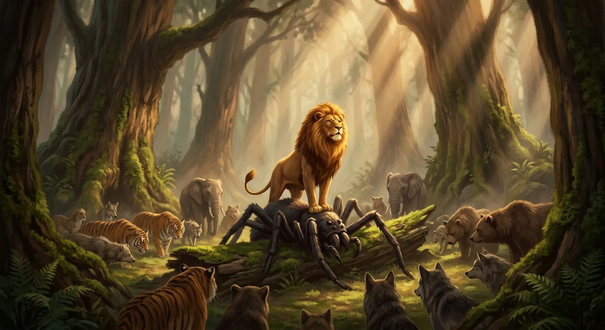
The Lion Claims His Forest Throne
After descending from the china wall, the travelers found themselves trudging through a most disagreeable stretch of country—boggy marshlands choked with tall, rank grass that concealed treacherous muddy holes beneath their feet. They picked their way carefully, stepping with caution until at last they reached solid ground. Yet even then the wilderness seemed to grow wilder still, and after a long, tiresome push through tangled underbrush, they emerged into a forest unlike any they had encountered before. The trees here were ancient giants, bigger and older than any the companions had ever seen.
The Lion surveyed his surroundings with unmistakable joy. "This forest is perfectly delightful," he declared. "Never have I seen a more beautiful place." The Scarecrow found it rather gloomy, but the Lion would hear none of it. He remarked upon the softness of the dried leaves underfoot, the rich green moss clinging to the old trees, and proclaimed that no wild beast could wish for a pleasanter home. Dorothy wondered aloud whether wild beasts might already inhabit such a place, and the Lion supposed there must be some, though none showed themselves just then.
They walked on until darkness forced them to stop. Dorothy, Toto, and the Lion lay down to sleep while the Tin Woodman and Scarecrow kept their faithful watch. When morning came, they resumed their journey, and before long a low rumble reached their ears—the growling of many wild animals gathered together. Toto whimpered, but the others pressed forward until they came upon an opening in the wood where hundreds of beasts had assembled: tigers, elephants, bears, wolves, foxes, and creatures of every variety one might find in a natural history. Dorothy felt a moment's fear, but the Lion recognized this as a meeting, and from the snarling and growling, he judged these animals were in considerable trouble.
The moment the beasts caught sight of the Lion, a hush fell over the great assemblage. The biggest tiger approached and bowed low. "Welcome, O King of Beasts!" he said. "You have come in good time to fight our enemy and bring peace to all the animals of the forest once more." The tiger explained their plight: a tremendous monster had come among them, a spider-like creature with a body as big as an elephant and eight legs as long as tree trunks. It seized animals and devoured them, and none felt safe while it lived.
The Lion listened quietly, then asked if other lions dwelt in this forest. The tiger admitted there had been some, but the monster had eaten them all—and besides, none had been nearly so large and brave as he. With characteristic directness, the Lion proposed his terms: if he destroyed their enemy, would the beasts bow down and obey him as King of the Forest? A mighty roar confirmed their agreement.
Bidding his companions farewell and leaving them in the beasts' care, the Lion marched proudly toward the oak trees where the spider lurked. He found the hideous creature asleep—its body covered in coarse black hair, its mouth lined with teeth a foot long. But the Lion noticed that its head was joined to its pudgy body by a neck as slender as a wasp's waist. Seizing his advantage, he sprang upon the monster's back and with one tremendous blow of his heavy paw, knocked the spider's head clean from its body.
When the Lion returned to the waiting beasts and announced their enemy was no more, they bowed before him as their King. He accepted their allegiance and promised to return and rule over them—just as soon as Dorothy was safely on her way to Kansas.
With this new title secured and his courage proven beyond doubt, the Lion rejoined his companions, ready to continue the journey that would carry them ever closer to the Emerald City and the fulfillment of all their hopes.
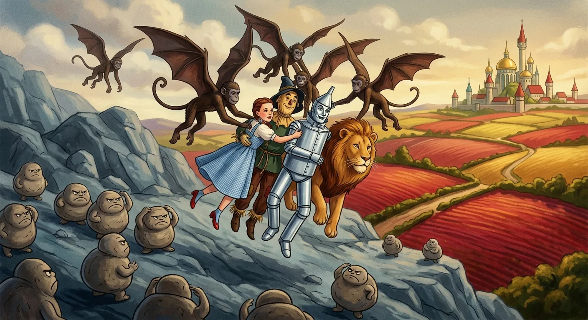
Over the Hill to Glinda's Castle
The forest released them at last, its shadows falling away behind as the four travelers emerged into open country—only to find their path blocked by a steep hill bristling with great hunks of rock from base to summit.
"That will be a hard climb," the Scarecrow observed, studying the rugged slope with his painted eyes, "but we must get over the hill, nevertheless."
He took the lead, as he often did now, and the others followed close behind. They had scarcely reached the first boulder when a rough voice rang out across the stones, commanding them to keep back. The Scarecrow demanded to know who spoke, and a head appeared above the rock—a strange, flat-topped head set upon a thick, wrinkled neck. The creature declared the hill belonged to his kind, and none were permitted to cross.
But cross they must, the Scarecrow insisted, for they were bound for the country of the Quadlings. When the strange man stepped fully into view, the travelers beheld the oddest being they had yet encountered: short, stout, with that peculiar flat head, and possessing no arms whatsoever. The Scarecrow, thinking such a helpless-looking fellow could pose no threat, announced his intention to pass regardless of objection.
He had taken but a single bold step when the creature's head shot forward like a battering ram, propelled by that thick neck stretching impossibly fast. The flat top of his skull struck the Scarecrow square in the middle, sending him tumbling head over heels back down the slope. The head snapped back into place, and the Hammer-Head laughed harshly at his handiwork.
Hundreds of similar creatures revealed themselves then, one lurking behind every rock, their boisterous laughter echoing across the hillside. The Cowardly Lion, his pride stung by their mockery, let loose a tremendous roar and charged up the slope—only to meet the same fate, bowled over by another shooting head and sent rolling down like a great tawny ball.
Dorothy helped her friends to their feet, the Lion bruised and sore, admitting that no one could withstand such opponents. What could they possibly do?
It was the Tin Woodman who remembered: Dorothy still possessed the Golden Cap, and one command yet remained to her. She placed the cap upon her head, spoke the magic words, and in moments the Winged Monkeys appeared before her, their King bowing low to receive her orders.
"Carry us over the hill to the country of the Quadlings," Dorothy said, and it was done. The monkeys swept them up—Dorothy, her three companions, and little Toto—and bore them through the air over the hill while the Hammer-Heads below yelled in fury, shooting their heads skyward but finding their targets forever out of reach.
When the monkeys set them down in that beautiful southern land, their King reminded Dorothy this was the final summoning. They bid each other farewell, and the Winged Monkeys vanished into the sky.
The country of the Quadlings spread before them in warmth and plenty—fields of ripening grain divided by well-paved roads, pretty brooks spanned by sturdy bridges, and everything painted a cheerful bright red. The Quadlings themselves proved as pleasant as their land, short and fat and good-natured, dressed all in red against the green grass. A farmer's wife welcomed the travelers kindly, offering them a generous dinner with cakes, cookies, and milk for Toto, then directed them southward toward Glinda's castle.
They walked on through that charming countryside until a beautiful castle rose before them, its gates guarded by three young women in handsome red uniforms trimmed with gold. When Dorothy declared her purpose—to see the Good Witch who ruled there—the soldier asked her name and disappeared inside. She returned moments later with welcome news: Glinda would receive them at once.
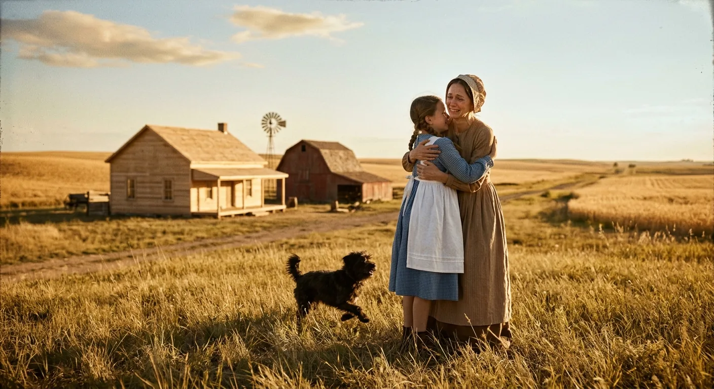
Glinda's Gift and Farewell Blessings
Before presenting themselves to the great Witch of the South, Dorothy and her companions took care to make themselves proper and presentable, as one ought to do when seeking an audience with so powerful a personage. Dorothy washed the dust of travel from her face and set her hair to rights, while the Lion gave his mane a mighty shake, the Scarecrow patted his straw into respectable shape, and the Tin Woodman polished his tin until it gleamed and oiled every joint until they moved without the slightest squeak.
Thus prepared, they followed the soldier girl into a grand chamber where Glinda sat upon a throne fashioned entirely of rubies. She was beautiful and young, with rich red hair that tumbled in ringlets over her shoulders, and though her gown was white as snow, her eyes were the kindest blue as they rested upon the little girl from Kansas.
Dorothy told her story from the very beginning—how the cyclone had swept her to this strange land, how she had gathered her dear companions along the Yellow Brick Road, and all the wonderful and terrible adventures that had befallen them since. Her greatest wish, she explained, was simply to return home, for surely Aunt Em would think something dreadful had happened to her, and unless the crops proved better than last year, Uncle Henry could hardly afford to put on mourning.
Glinda kissed Dorothy's sweet upturned face and promised she could indeed show her the way home—but only in exchange for the Golden Cap. Dorothy surrendered it gladly, for it was of no further use to her, and Glinda smiled, saying she would need the Winged Monkeys' service exactly three times.
The Good Witch then turned to Dorothy's companions and asked each what he would do once Dorothy had gone. The Scarecrow would return to rule the Emerald City; the Tin Woodman wished to govern the Winkies, who had been so kind to him; and the Lion longed to reign over the grand forest beyond the Hammer-Heads, where the beasts had made him their King. Glinda promised that each of her three commands to the Winged Monkeys would carry one friend safely to his kingdom, and afterward she would give the Golden Cap to the Monkey King so that his band might be free forevermore.
At last Dorothy reminded Glinda that she had not yet revealed how to return to Kansas. The answer was simpler than anyone had imagined: the Silver Shoes Dorothy had worn since her very first day in Oz possessed the power to carry her anywhere in the world in just three steps. Had she only known, she might have gone home at once—but then, as her friends quickly pointed out, the Scarecrow would never have gained his brains, the Tin Woodman would never have received his heart, and the Lion would have remained a coward forever.
Dorothy agreed that she was glad to have helped them, but now that each had what he most desired—and a kingdom besides—it was time for her to go. She embraced the Lion and kissed him tenderly, kissed the weeping Tin Woodman despite the danger to his joints, and hugged the soft, stuffed Scarecrow tight, finding tears upon her own cheeks at this sorrowful parting.
Taking Toto solemnly in her arms, Dorothy clapped her heels together three times and commanded the shoes to take her home to Aunt Em. Instantly she whirled through the air so swiftly that only the wind whistling past her ears told her she was moving at all. Three steps later she tumbled onto the broad Kansas prairie, right before the new farmhouse Uncle Henry had built after the cyclone carried the old one away. Toto leaped from her arms and ran barking toward the barn, and Dorothy stood up to find herself in her stocking-feet—for the Silver Shoes had fallen off somewhere over the desert and were lost forever.
She had scarcely caught her breath before a familiar figure came running from the farmhouse door, and Dorothy's heart swelled with a joy no magic could ever match.
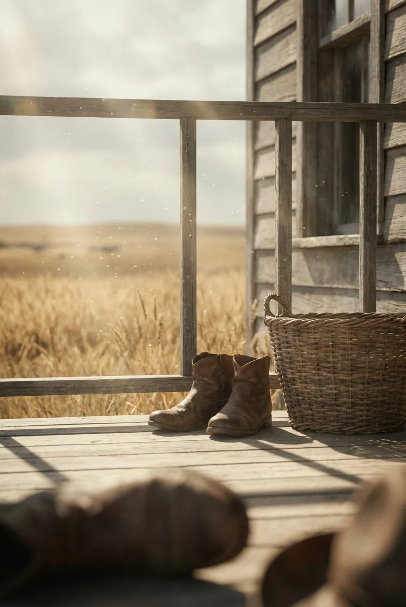